Preserving local material art direction across 3D asset regeneration
A Lantern Pilot Study on Intratriangle Regions, Texture Sampling, and Local Geometry. A written pilot study that grew out of MATE — presented here in full, with two interactive figures added for this page.
- Author
- Kian Kang
- Year
- 2026 — research ongoing
- Method
- Barycentric clipping, UV mask diagnostics, PBR channel readback
- Scope
- One asset, one edit; not a cross-mesh transfer result
§Abstract
Regenerating a 3D asset can alter its mesh, UV layout, and texture organization, making it difficult to carry forward the local material decisions an artist made on an earlier version. This paper presents MATE (Material Analysis & Texture Editor), a research prototype, and asks how a local edit can be expressed as a reproducible spatial region with measurable protection constraints. The case study uses a weathered stone band that wraps around the four sides of a wooden lantern post. First, clipping in barycentric coordinates represents the band inside 24 original triangles without modifying the source mesh. The band contains no complete triangles and has a surface area of 18.702367 squared asset units, or 13.01369% of the designated nonhorizontal post surface. Second, in a 2048 × 2048 software mask diagnostic at bilinear LOD 0, 95 of 201,570 fixed protected probes returned nonzero edit weights. Of these, 29 were already nonzero under nearest-neighbor sampling; the other 66 became nonzero under bilinear filtering. Across four UV seams, 62 of 128 paired locations disagreed under nearest-neighbor sampling. Third, a same-source comparison examines two variants that share the final physically based rendering (PBR) resources: A5 v2 changes the material alone, while B5 adds local cuts and recessed geometry. The study separately reports geometric readback, texture-channel sampling, and grazing-light previews. Together, these results show why spatial region representation, texture-sampling protection, and visual appearance require separate evidence. The findings are limited to this pilot and do not establish successful transfer between meshes.
Keywords: 3D asset regeneration; material art direction; intratriangle regions; barycentric clipping; UV seams; texture filtering
§ 01Introduction
1.1 From asset generation to persistent artistic edits
In game and real-time content production, an asset’s geometry and appearance often evolve over several iterations. A prop may be rebuilt to suit a new composition, meet a revised modeling requirement, or make use of an updated generative model. Consider an art direction decision to turn the middle section of a wooden post into cool blue-gray weathered stone while leaving its metal collar and the wood above and below unchanged. The first edit can be implemented using the current UV layout, material slots, and manual painting, but all three operations are tied to that version of the model. A replacement asset can differ in triangle IDs, UV islands, texture sampling density, and even part boundaries. Visual similarity between the two models alone does not establish where the same edit belongs.
In this study, preservation has both a positive and a negative requirement. The edit must find a suitably stable region on the intended surface and remain inside its specified boundaries. Surfaces outside that region must remain unaffected by UV adjacency, filtering, or changes in geometric partitioning. Judging only whether the petrified band looks convincing overlooks the second requirement. A GLB that opens successfully addresses neither. We therefore formulate art direction as a set of verifiable constraints, defining comparable experimental units for future tests of correspondence between asset versions.
1.2 Case selection and research questions
Lantern is a static prop with a wooden post, metal fittings, a crossbeam, a hanging lamp, and a base. We use the complete asset rather than a planar test patch because the edit region wraps around four sides, crossing corners and UV seams while bordering wood that must remain unchanged. The contrast between the original and intended materials allows us to examine shape, boundaries, and texture sampling together. The design calls for circumferential petrification at the middle of the post, with a low-saturation, cool blue-gray weathered-stone appearance, a rough surface, and fine grain. All other components are specified to remain unchanged.
We ask three questions. RQ1: When the source triangles straddle the intended edit boundary, can a continuous four-sided region be represented and its actual 3D surface area measured without retopology? RQ2: After projection into UV space and discretization, which fixed probes in the protected region are affected by sampling, and how do mask erosion and padding affect edit coverage and seam consistency? RQ3: When the two variants share the same material resources, what can be learned from a material-only variant versus one that also modifies local geometry, and which visual differences require further geometric or shading diagnostics?
1.3 Scope and contributions
This paper presents a traceable three-layer case study. It defines a spatial representation that can store an edit region inside the original mesh triangles; records geometric area, UV mask weights, and samples of actual PBR channels as separate evidence; and shows how to organize a visual comparison of material and local-geometry variants derived from the same source asset. The researcher proposed the core MATE architecture, defined Lantern’s artistic intent and protected regions, and formulated the validation questions. Technical design and prototype implementation were iterated with assistance from Codex and Claude. The reported measurements draw on existing reports, archived evidence, and independent numerical checks. The computed candidate region follows a given procedural definition; it is not an annotation made by a person independent of the development process.
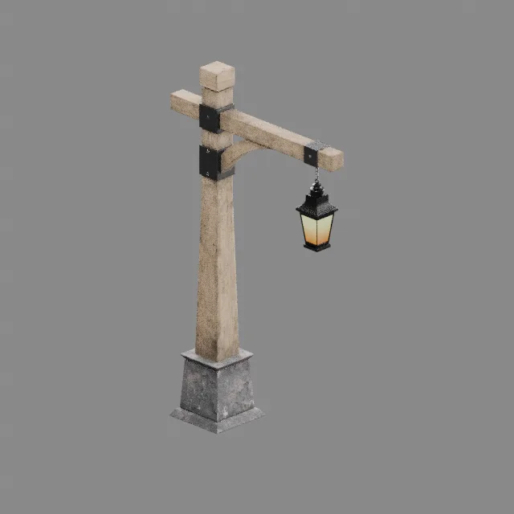
§ 02Related Work
2.1 Shape correspondence and semantic localization
Work on shape correspondence asks where a point on a source surface belongs on a target surface. Ovsjanikov et al. [R1] represent a map between shapes as an operator between function spaces, enabling transfer of surface functions such as segmentation labels without first requiring an explicit correspondence for every point. Uzolas et al. [R2] distill 2D visual features into surface-aware 3D semantic features for point-level matching across instances of the same class. Their experiments report improved disambiguation of left and right and of front and back, and include demonstrations of 3D-to-3D texture transfer. These studies inform the target-localization problem in MATE: correspondence must distinguish semantically different parts even when they are geometrically close. Identifying the correct part still leaves two separate questions: whether the boundary within that part is accurate and whether neighboring surfaces are unaffected. Semantic localization and local protection therefore require distinct success criteria.
2.2 Surface parameterization and appearance transfer
AUV-Net, by Chen et al. [R3], jointly learns UV maps and texture atlases to establish semantically aligned parameterizations across a set of shapes. These parameterizations support texture transfer and synthesis without requiring every mesh to follow a predefined topology. Lin et al. [R4] start from a textured reference mesh and use a depth-conditioned diffusion model with coarse-to-fine UV optimization and color consistency constraints to transfer texture to a target mesh with substantially different topology. The two methods illustrate how shared parameterization and generative priors, respectively, can reduce dependence on matching topology. This MATE study examines a different level of evidence. Rather than reparameterize existing assets, we first define an artist-specified edit region on the 3D surface and then examine how that region is discretized in the asset’s existing UV layout. We ask not only whether the resulting appearance is coherent, but also whether the selected region remains continuous when sampled and whether filtering mixes edit weights into protected surfaces.
2.3 Local stylization and editable materials
3D Paintbrush [R5] uses text guidance to jointly optimize a local region and its texture on a given mesh, applying multiscale supervision from cascaded diffusion models to refine local detail. Paint-it [R6] uses a text prompt and a mesh as input and applies differentiable rendering to optimize relightable PBR textures. These works focus, respectively, on localizing and creating a new appearance and on representing a new appearance through physically based material channels. MATE focuses on a different production scenario: an artist has already approved a specific edit, such as petrifying a band around all four sides of a wooden post, and the workflow then receives a regenerated asset with potentially different topology and UVs. Generating a local stone appearance and reapplying an approved edit to corresponding surfaces while preserving their surroundings are different tasks. We also distinguish numerical mask sampling, PBR channel writeback, and rendered appearance. The cited methods position the research question; they were not run as experimental baselines in this study.
2.4 Texture filtering and verifiable region protection
Williams [R7] explains through hierarchical prefiltering why a texture query at a coarser scale can aggregate a broader neighborhood of the original texture. The glTF 2.0 specification [R8] distinguishes UV coordinates, sampler filtering and addressing modes, and metallic–roughness material channels as separate data elements. This distinction explains a potentially misleading result in the present experiment: a zero edit label at a texel center does not ensure a zero edit weight for a continuous surface query at that location. Two sides of the same 3D seam can also produce different sampled values when they map into different UV neighborhoods. We therefore report 3D surface area, software sampling probes, and renders using shared materials separately. None of these measures alone establishes successful transfer or consistent behavior across renderers.
§ 03Study Design and Evidence Layers
3.1 Task definition and protected domains
The edit region is a continuous band encircling the wooden post. Its intended appearance is a consistent degree of petrification on all four sides, with the wood above and below left intact and all other components excluded. The reference span is the exposed wood between the lowest metal collar and the stone base. The band is fixed at approximately the central 20% of that span. The 20% refers to a proportion of height, not the area of the entire post, the entire asset, or UV space. Area-based percentages must be interpreted using their respective denominators.
Three surface roles are distinguished. The edit region is the intersection of the fixed height band with the nonhorizontal surfaces of the designated wooden post. The protected region consists of the remaining surfaces of the same post, including horizontal surfaces excluded from editing. The excluded region consists of the rest of the asset. The first two regions can share a parent triangle, so a face ID alone cannot classify the entire face as edited or protected. The excluded region is constrained by source asset part identity rather than obtained by applying a height cut to the entire scene. We record the glTF hierarchy transforms, coordinate system, original face indices, and parent face IDs to avoid applying the same numeric values in different coordinate systems.
3.2 Cross-checking evidence at three layers
| Layer | Controlled inputs | Reportable results | Type of evidence |
|---|---|---|---|
| Geometry | Fixed source mesh, post identity, and two spatial boundaries | Intersection area, closed boundary loops, and overlap with the protected region | Independent analytic and numerical checks |
| UV and mask | Fixed UVs, raster dimensions, probes, and software sampling rules | Nonzero weights, edit coverage, and seam differences | Reproducible software sampling |
| Material and visualization | Geometry, GLB files, and PBR textures for the original and isolated variants | Actual channel differences, geometry readback, and static and grazing-light renders | CPU readback and experimental image comparisons |
The three layers address where the edit is selected, what the sampling procedure returns, and how the edited asset appears. The source scene is read-only, and changes are confined to isolated variants. The frozen Lantern source GLB and the separately generated target GLB are retained as distinct versions. The author generated the target in Tripo from the original SOURCE ONLY image. We include it to show that the geometry differs across versions, not to use a render of the target as before-and-after evidence of transfer. Software probe weights are not interpreted as runtime screen-space pixel errors, and the source-asset comparison between A5 v2 and B5 is not treated as a transfer result.
3.3 Example structural differences after regeneration
Read-only parsing of the source and regenerated GLBs yields the following statistics for the same object. The vertex count sums the entries in POSITION accessors; it may count extra vertices created at seams or normal splits and does not equal the number of unique 3D points. The mesh and triangle counts show why original face indices cannot be reused directly as region identifiers on the new model. They do not, on their own, quantify visual differences or the quality of part recognition.
| Read-only parsing statistic | Lantern source GLB | Tripo-regenerated GLB |
|---|---|---|
| glTF mesh count | 3 | 1 |
| Triangle count | 5,394 | 94,754 |
| Total POSITION accessor entries | 4,145 | 51,700 |
| Material and image counts | 1 / 4 | 1 / 3 |
Table note: The source is the structural comparison JSON in the E1-F Phase 1 technical review evidence package. Triangle counts come from actual readback, not the generation-time polygon target. The edit and protected regions, source face identities, and areas used in the experiments are all defined on the source GLB.
§ 04Spatial Region Representation and Area Computation
4.1 Polygons within source triangles
Let v0, v1, v2 be the vertices of a source triangle. Any point in the triangle can be written as p = b0v0 + b1v1 + b2v2, where bi ≥ 0 and b0 + b1 + b2 = 1. After verifying the coordinate convention, we take height along the glTF world Y axis. The two cuts lie at 10.036 and 12.689 asset length units. Because the height coordinate is linear in the barycentric weights, the lower and upper bounds define two linear half-spaces in the barycentric domain. Clipping successively against the two bounds produces an empty intersection, a zero-area intersection, or a valid convex polygon.
The representation stores only the parent face ID and the polygon vertices in barycentric coordinates. The newly computed vertices describe the edit region; they are not written into the source mesh. For a face that straddles a bound, the intersection points are computed where its edges cross the cut plane. If an entire positive-area face is coplanar with a cut, the frozen convention assigns the closed boundary to the edit domain so that the face is not counted again in the protected domain. To verify continuity, the segment topology of the upper and lower cuts is tested for closed loops. Seeing an overlay in all four views does not substitute for this check.
4.2 Area estimation and denominators
We reconstruct the polygon points in 3D using their barycentric weights and compute their surface area by triangulating the polygon as a fan. For each triangle fragment, the area is half the magnitude of the cross product of two edges. The fragment areas are summed by parent triangle and part. UV coordinates are not used in this step because distortion and differences in chart scale would change the interpretation. Areas are reported in squared source-asset coordinate units, without a conversion to square meters.
Two denominators are retained for evaluation. The edit coverage ratio is normalized by the area of all nonhorizontal post surfaces, including shoulders and bevels. Overlap with the protected domain is interpreted relative to the remaining post surface area. Output face IDs are also checked against the excluded surfaces of the original scene. We measure the maximum distance outside the allowed height interval as a local numerical diagnostic, not as a global matching error between arbitrary boundaries. We also compute an area decomposition residual to verify that the below-band, in-band, and above-band fragments together account for the area of the parent face.
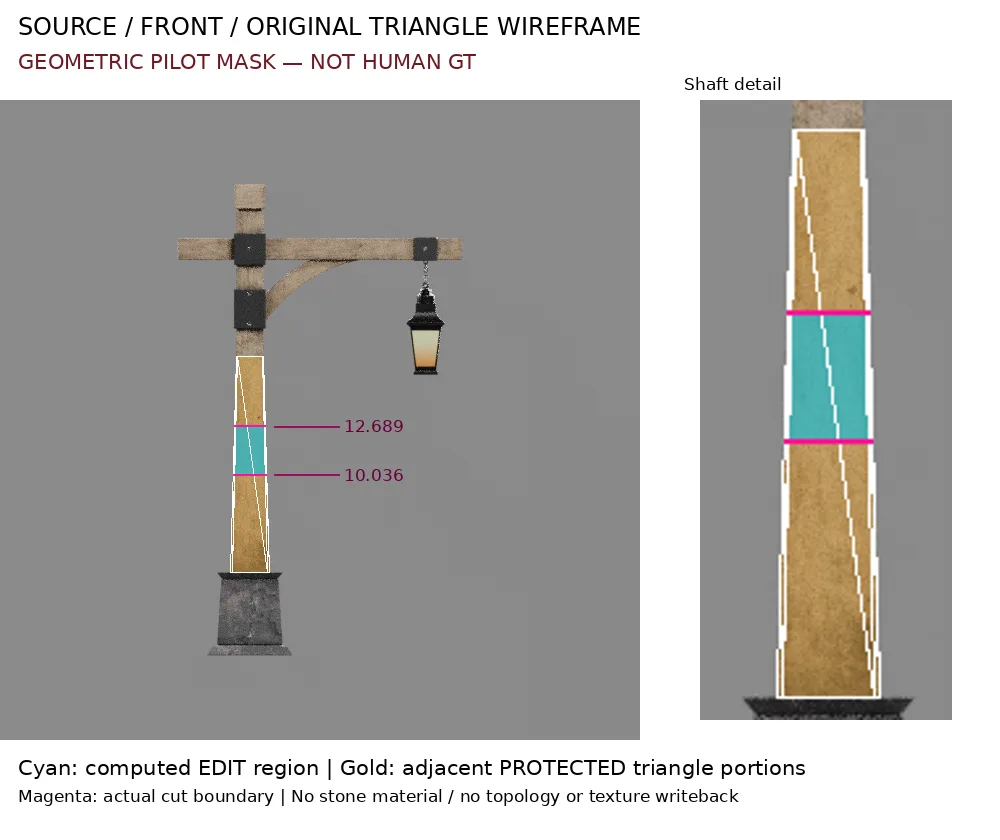
The reference prism from §4.3, unfolded: width 2, depth 3, height 10. Drag the two lines. The band is clipped inside each triangle, so its area follows the band exactly — whatever the triangulation.
With the band at 4–6 the area is 20, as in the paper. Whole-face selection can only answer 0 or far too much — the same limit §5 reports on the Lantern, where none of the 24 intersecting faces lies fully inside the band.
4.3 Analytic reference before Lantern evaluation
The synthetic check uses a rectangular prism of width 2, depth 3, and height 10. The central band is 2 units high and the lateral perimeter is 10 units long, giving an independent reference area of 20. The four side contributions are 4, 6, 4, and 6. Changing only each side’s triangulation diagonal or vertex winding leaves the theoretical area unchanged. The top and bottom are not part of the edit region. The tests also cover triangles crossing both bounds or only one, triangles entirely inside or outside the band, a cut passing through a vertex, reversed winding, extremely small positive areas, collinear vertices, and duplicate vertices. Nonfinite coordinates and invalid bounds are rejected rather than accommodated by expanding the region with a tolerance.
For one configuration of the standard prism, the computed area is 20.000000000000007, with absolute error of approximately 7.11×10⁻¹⁵ and relative error of approximately 3.55×10⁻¹⁶. The independent check uses analytic cumulative area as a function of height and Heron’s formula as cross-references, rather than treating the clipping implementation’s own polygons as ground truth. Across 626 independent checks, the maximum absolute area error is 5.68×10⁻¹⁴. These are test checks, not 626 independent research assets. The thresholds used in defining the tests were recorded in advance. The rule for assigning coplanar boundaries was added after the independent audit identified double counting in the partition and was then tested separately.
§ 05Geometric Results for Lantern
| Metric | Result | Basis |
|---|---|---|
| Original faces with a positive-area intersection | 24 | 384 nonhorizontal faces of the wooden post |
| Original faces lying entirely within the band | 0 | The same 384 faces |
| Original faces outside the band or with only a zero-area intersection | 360 | The same 384 faces |
| Edit-region area | 18.702367 | Asset units² |
| Eligible lateral surface area of the wooden post | 143.713014 | Asset units²; includes shoulders and bevels |
| Edited area fraction | 13.01369% | 18.702367 ÷ 143.713014 |
| Maximum excursion past a height bound | 1.78×10⁻¹⁵ | Asset length units |
| Residual overlap with the protected region | 2.24×10⁻¹⁶ | Independent analytical result; asset units² |
These results expose an expressiveness limit of whole-face selection. None of the 24 intersecting original faces can be included in its entirety. Selecting only faces fully contained in the band yields zero area; selecting all intersecting faces includes wood outside the boundary. In-face polygons partition a parent face into edited and unedited portions, preserving a design extent that whole-face selection cannot express. The edited areas on the four sides are approximately 4.675591, 4.675591, 4.675592, and 4.675592 asset units², respectively. The upper and lower intersection contours each contain 24 segments and form a single closed loop. A parent-face identity check confirmed that no faces from excluded components were selected.
The protected area of the wooden post is 131.618356 asset units², including horizontal faces. The residual overlap is numerically zero under the fixed tolerance for this phase; this does not establish that the bilinearly filtered texture remains unchanged in the protected region. Given the specified wooden component and height bounds, an independent analytical calculation returned an edit-region area of 18.702367004977507, in agreement with the prototype. This reference verifies the spatial computation but cannot be used to score component correspondence on a target model.
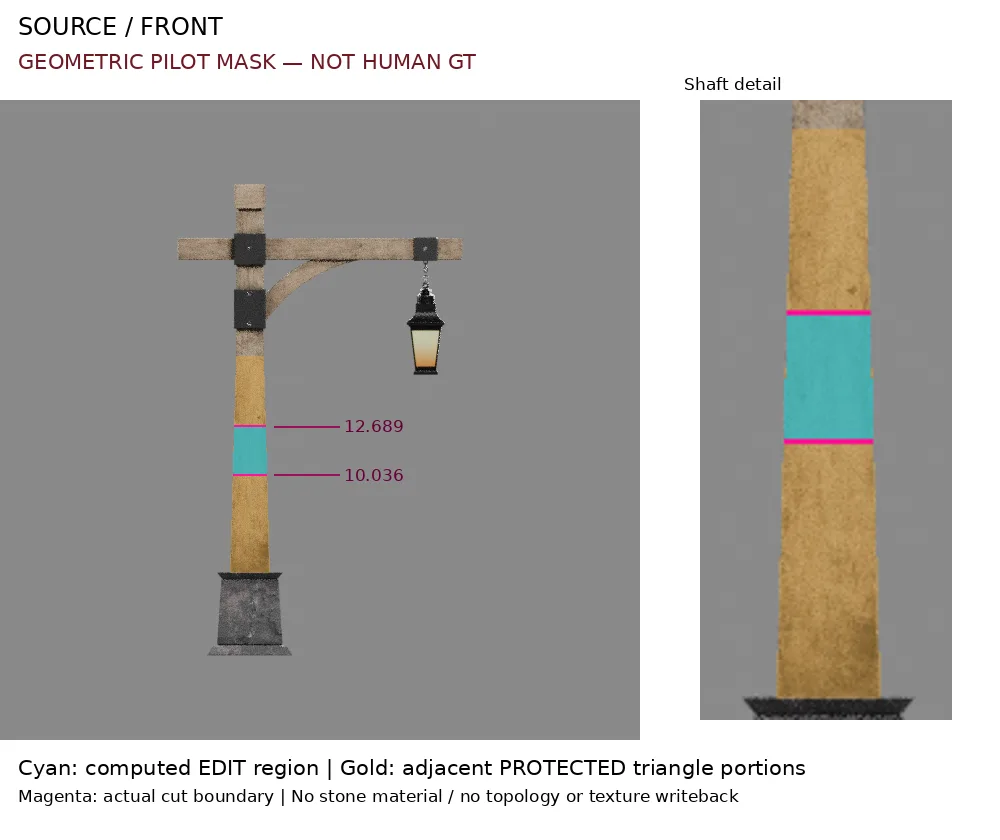
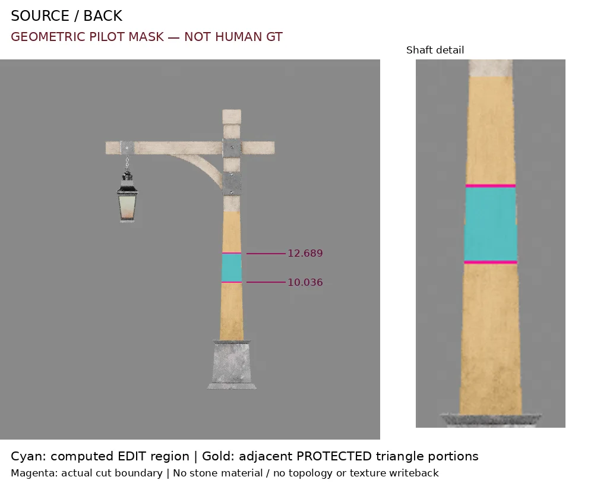
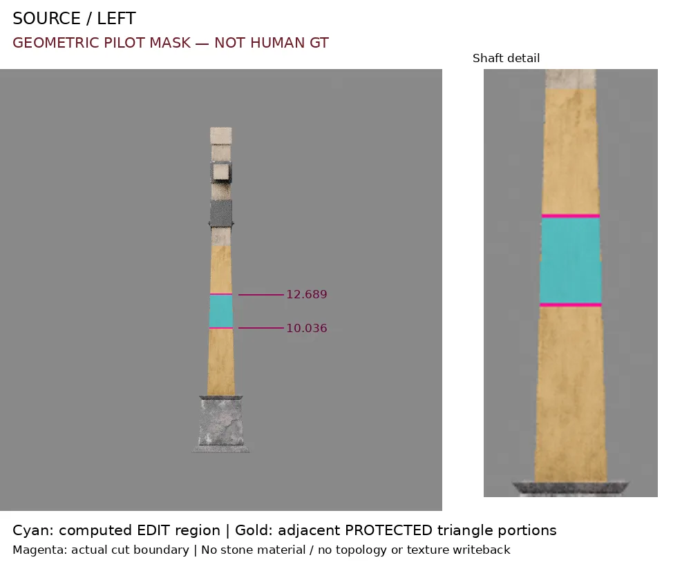
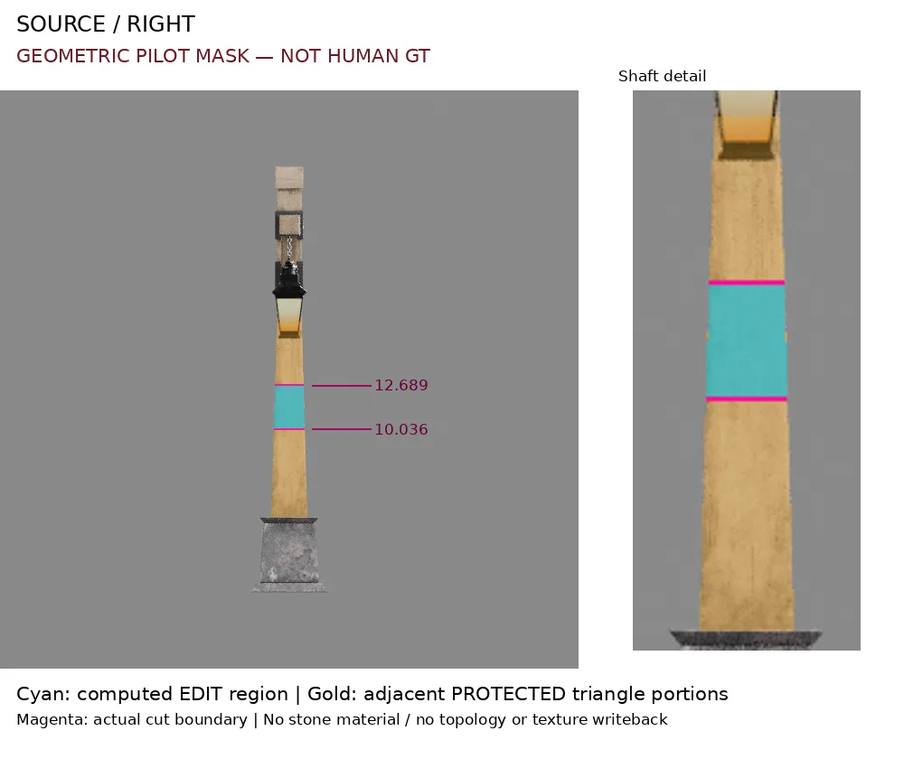
§ 06From Spatial Selection to a Texture Mask
6.1 UV Projection and Discretization
The local spatial selection is already encoded in barycentric coordinates, so the same weights can be applied to the UV vertices of its parent triangle. This projects the selection into the existing UV layout without reparameterization or treating spatial height as a texture coordinate. Each UV island represents a separate part of the surface. Two faces that share a 3D edge can belong to different UV islands; their adjacency in 3D does not imply coordinate adjacency in 2D. A connected spatial region can therefore appear as several disjoint regions in UV space.
The experiment classifies texel centers on a 2048×2048 grid and records edited, protected, and unassigned states separately. The denominator for EDIT_ONLY is the total number of texel centers in the 2048² atlas, rather than the area of the wooden post or the number of texel centers inside its UV islands. A texel footprint near a boundary can intersect both the edited and protected domains. Assigning a discrete label to its center does not remove this mixed footprint. At a seam, the same 3D location can map to different UV coordinates on its two sides. The test therefore retains paired sample locations instead of judging seam behavior from the appearance of a single projection.
6.2 Measured UV Mapping Results
All 24 edited parent faces could be projected into the existing UV layout, spanning four UV islands and crossing four seams. Two other protected triangles in the scene had zero UV area. The audit records these unsampleable UV footprints separately from the projectability of the edit region, since their triangles still exist in 3D. Within the valid domain, none of the 124 candidate pairs with overlapping bounding boxes exhibited a positive-area edit–protection conflict larger than 10⁻¹² UV units². This check concerns region membership in the continuous UV domain, not texture filtering.
| 2K Base Color Atlas Class | Texel Centers |
|---|---|
| Edit only | 94,515 |
| Protected only | 2,400,973 |
| Conflict | 0 |
| Unassigned | 1,698,816 |
| Total | 4,194,304 |
An independent implementation checked the entire grid and found zero classification discrepancies. Under this rule, the 94,515 edited centers account for approximately 2.25% of the full atlas. This fraction cannot be compared directly with the 13.01% measured in the geometry experiment because the quantities and denominators differ. The experiment also identified 507 valid triangles that contained no texel center, none of which was among the 24 edited parent faces. Exact agreement between implementations of a center-sampling rule does not imply that a grid of this resolution samples arbitrarily small surface patches.
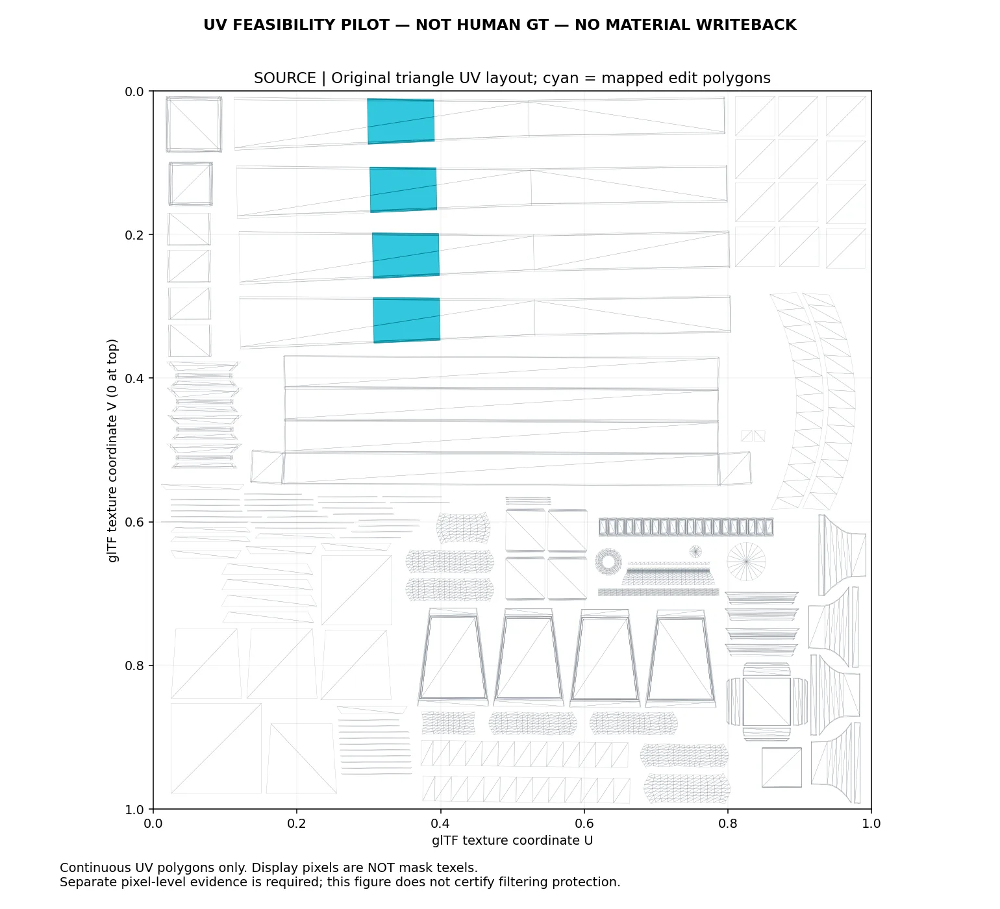
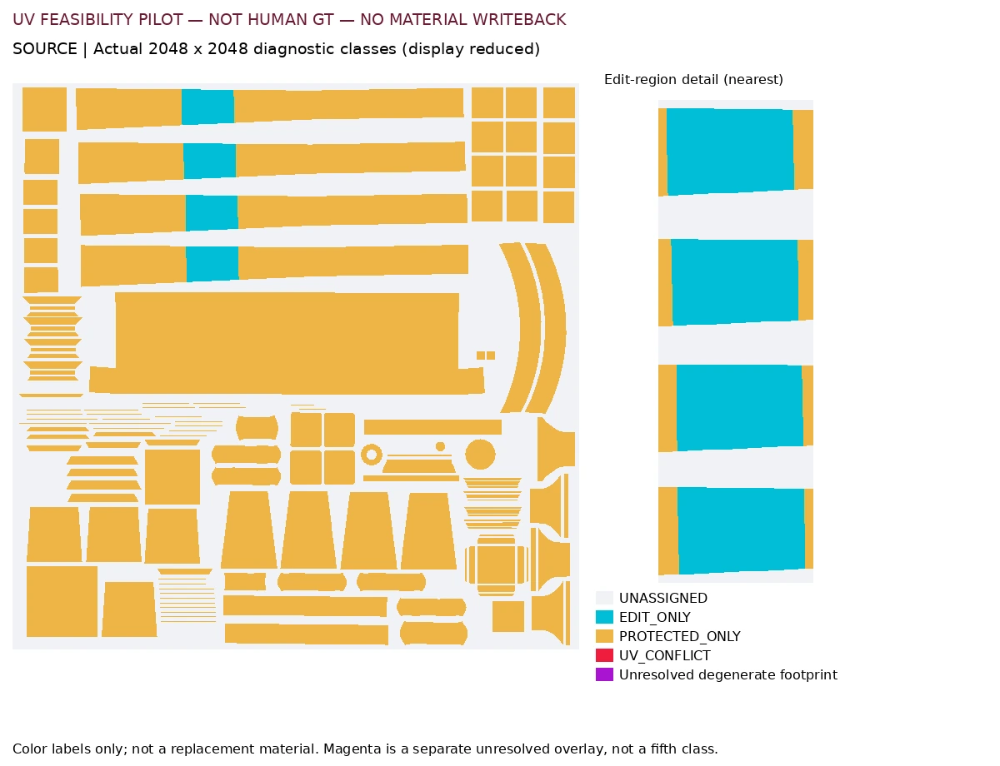
6.3 Sampling Baseline and Candidate Strategies
The geometric boundaries, UV coordinates, and probes are held fixed while comparing nearest-neighbor and bilinear sampling. Nearest-neighbor sampling reads a single texel; bilinear sampling weights neighboring texels according to local coordinates. A protected sample can therefore receive a contribution from an edited texel even when its own location lies outside the edit region. Box-filtered mipmaps model the expansion of the sampling footprint as the texture is downsampled. For each condition, the test counts how many of the same 201,570 fixed protected probes receive edit weights above 10⁻¹². The placement of these probes is deterministic and deliberately covers locations at risk; they are not uniform surface-area samples. The area-weighted edit measurement instead uses 3,072 quadrature points whose weights sum to the area of the fixed spatial edit region.
In addition to the original binary mask, the experiment compares one-texel erosion, 4×4 subsampled coverage, a coverage-threshold variant, padding restricted to unassigned texels, and spatial-predicate gating. Erosion removes edited texels near the protected boundary. Subsampled coverage lets each texel encode more of the region within its footprint. Padding uses only unassigned texels. The spatial predicate uses the 3D position and face identity to determine whether the mask can take effect. This last variant is implemented only in the experimental CPU sampler as a checkable conditional multiplication, not as a standard GLB material-export option. All candidates use the same probe locations and thresholds; an apparently more stable outcome does not justify changing the denominator.
A small texture mask. The white line is the true edit boundary; orange texels are those whose centre falls inside it. Move the probe across the line and compare the two samplers.
Dots mark protected probes that read a non-zero edit weight: white under both samplers, orange only once bilinear filtering blends neighbouring texels. Erosion removes them — and lowers coverage. That trade-off is the subject of §7.
§ 07Texture Filtering Results
7.1 A Geometrically Correct Region Can Still Mix During Sampling
For the original 2K mask, nearest-neighbor sampling at LOD0 returns a nonzero edit weight at 29 of the 201,570 protected probes. With bilinear sampling at LOD0, that count rises to 95. The additional 66 probes are not classified as edited under nearest-neighbor sampling but receive nonzero weights under bilinear sampling. All 95 lie outside the continuous edit region and cluster near its boundary. Correct geometric classification of protected points therefore does not prevent a texture sampling footprint from crossing the boundary. The fraction 95/201,570, or approximately 0.04713%, describes this probe set only. It is not a fraction of affected surface area, a pixel error rate, or a probability of visible artifacts.
The test samples 32 paired locations on each of four UV seams, for 128 pairs in total. Under nearest-neighbor sampling, 62 pairs disagree, with seam-level counts of 14, 17, 16, and 15. Under bilinear sampling, all 128 pairs differ by more than 10⁻¹² in continuous weight. Reclassifying the bilinear samples using a threshold of 0.5 still yields 62 disagreements. The first number is sensitive to small differences in continuous weight above the tolerance, whereas the second measures disagreement in discrete classification. The mean absolute difference between seam sides is approximately 0.3207 with bilinear sampling, compared with approximately 0.4844 under nearest-neighbor sampling. The number of differing pairs can thus increase even as the mean difference decreases. Neither quantity can independently characterize seam behavior.
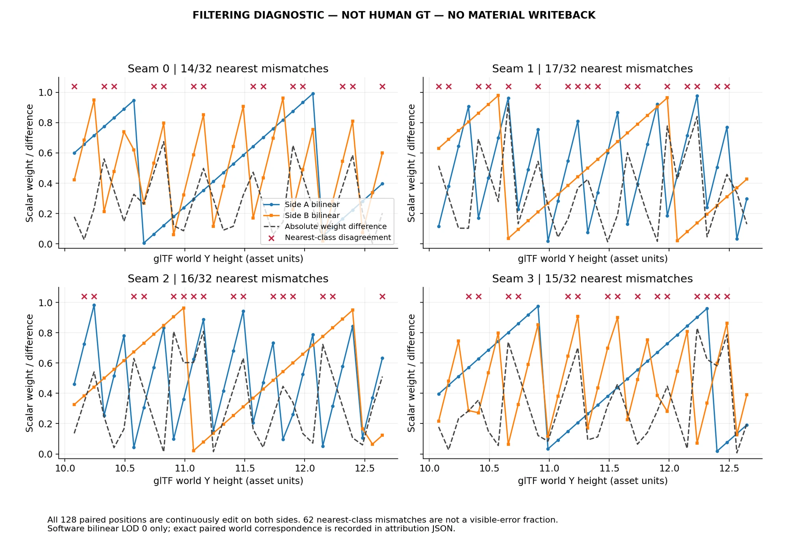
7.2 Tradeoffs Among Protection Strategies
| 2K Bilinear Sampling at LOD0 | Nonzero Protected Probes / 201,570 | Area-Weighted Mean Edit Weight | Seam Pairs with Different Weights / 128 |
|---|---|---|---|
| Original texel-center mask | 95 | 0.99737 | 128 |
| One-texel erosion | 0 | 0.98372 | 0 |
| 4×4 coverage approximation | 96 | 0.99670 | 128 |
| Coverage threshold of 0.75 | 84 | 0.99599 | 127 |
| Padding into unassigned texels | 96 | 1.00000 | 0 |
| Spatial-predicate gating | 0 | 0.99737 | 128 |
Erosion and padding both yield zero seam disagreements in this table, but for opposite reasons. Erosion can return zero on both seam sides, removing the difference at the cost of lower edit coverage. Padding fills adjacent texels, improving edit coverage while increasing the number of protected probes with nonzero weight from 95 to 96. The spatial predicate gates weights to zero at protected probes based on their face and height, but does not correct differences in continuous weight across UV islands. These results illustrate why a single aggregate score or minimum count is unsuitable for ranking the strategies. Edit coverage, effects on the protected surface, and seam behavior should be reported side by side and interpreted in light of sampling at different scales.
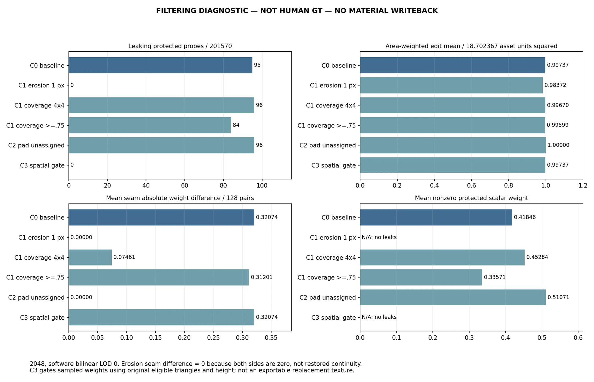
§ 08Material and Local Geometry Comparison on the Source Asset
8.1 Material Design and Controlled Conditions
The desired appearance of the petrified band is more specific than a uniform blue-gray coating. Its design uses a desaturated cool blue-gray with mineral variation in Base Color, places variations in local roughness and visual grain in the Roughness and Normal maps, and treats physical facets and silhouette changes as a separate experimental approach. The material maps were generated reproducibly by numerical methods. The material is nonmetallic, with an 8-bit sRGB reference color of [112, 126, 130], a generated roughness range of 0.61–0.91, and a resolution of 2048². Finite differences of the height field affect shading through the tangent-space normal without displacing the surface. No additional ambient occlusion was used to simulate depressions. These textures are neither stone scans nor calibrated physical measurements.
A5 v2 updates PBR images in an isolated working copy of the source GLB, preserving the original geometry, UVs, and sampler. B5 uses the same final PBR maps and sampler, subdivides the original triangles within the band, and introduces localized recesses and facets under a displacement envelope. Sharing the material resources makes it possible to examine appearance differences when physical geometry is introduced. Subdivision also changes local shading-normal interpolation and the tangent basis, so this is not a strictly single-variable comparison. A5 uses a shared render configuration, but a separate full-scene snapshot was not saved for it. The images illustrate the working copies and the observed effects; they neither attribute every difference in brightness to geometry nor establish artistic superiority through human evaluation.
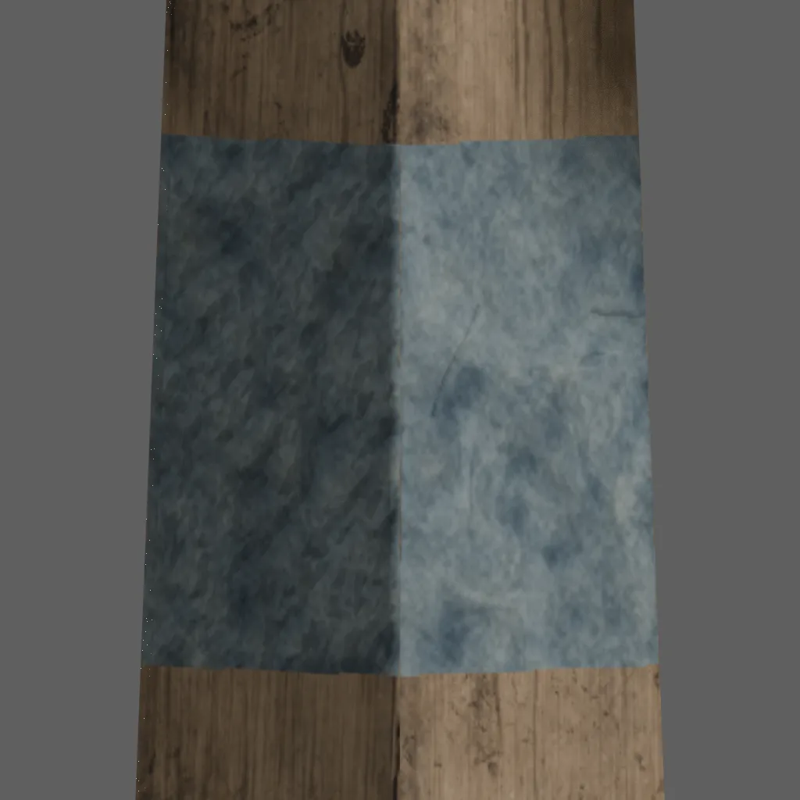
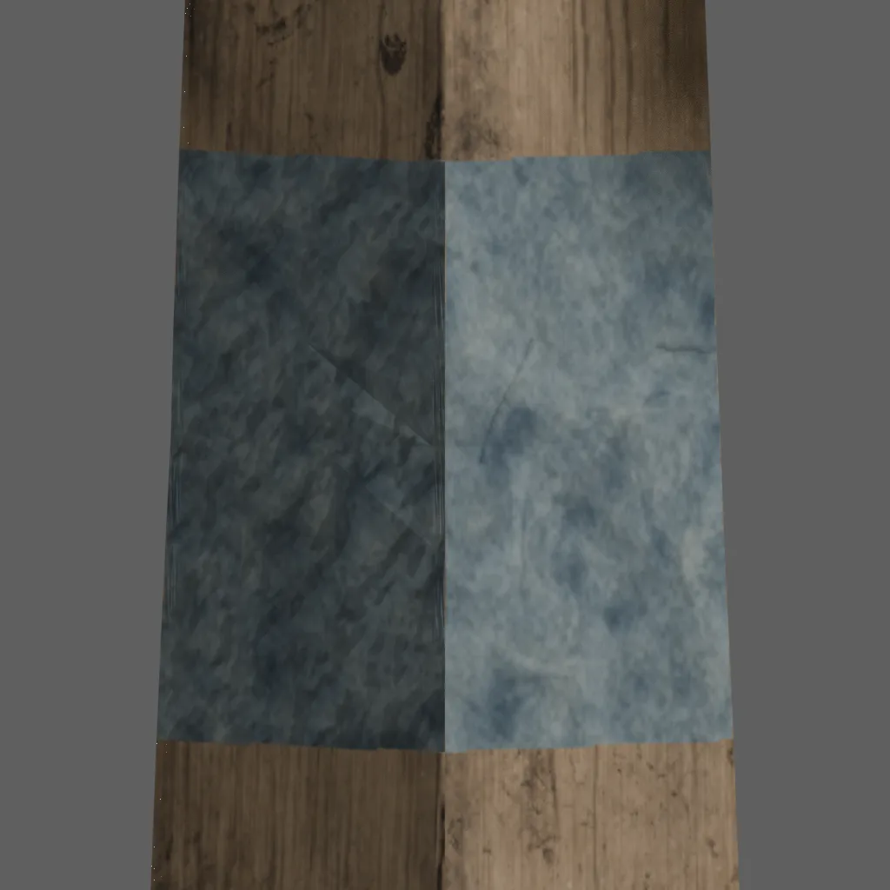
8.2 Geometry Readback and Render Observations
Across the asset, the triangle count rises from 5,394 to 6,306. The 24 original parent faces are partitioned into 864 edit fragments and 72 adjacent protected fragments. The maximum inward displacement in B5 is approximately 0.05391 asset length units in the float32 readback. This measurement cannot be converted to physical centimeters. The overall bounding box changes little at the current readback precision because the boundary remains anchored; the nearly unchanged bounds do not imply that all local vertices retain their positions. Independent shading-direction sampling on the 72 protected fragments gives a maximum sampled deviation of approximately 0.693° in interpolated shading normals. This angle does not describe the physical slope of the stone or a change in height. Geometric positions and the surface shading field were examined separately.
Grazing light makes local variations in luminance across the band easier to observe. The wireframe confirms that B5 contains newly formed triangles. The qualitative images show facets within the band and changes in brightness at its edges. One viewpoint or lighting condition cannot distinguish changes caused by geometric displacement from those caused by a change in the shading basis. The front face, side edges, and wood–stone transition are useful locations for future visual study. The present observations are not reported as human preference scores, which were not collected.
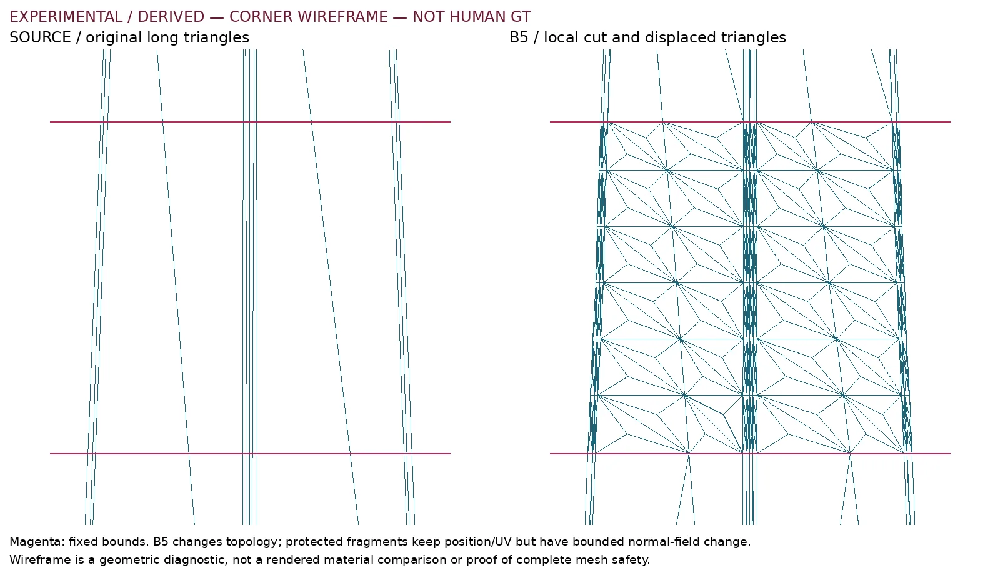
8.3 Probe Verification on Actual Textures
The mask simulation records edit weights. A separate test reads the actual image data for the original material and A5 v2 from the final GLB files. It uses fixed CPU probes to read Base Color, Roughness, and tangent-space Normal with REPEAT addressing, bilinear filtering, and a box-filtered mip model. Base Color is measured by maximum channel difference in linear RGB, Roughness by absolute channel difference, and Normal by the angle between directions. The change threshold is 10⁻⁷ for color and roughness and 10⁻⁴ degrees for the normal. Because the quantities have different units and meanings, their magnitudes should not be compared on a common scale.
| Mip LOD | Base Color: changed probes | Max. linear RGB channel difference | Roughness: changed probes | Max. roughness difference | Normal: changed probes | Max. angular difference |
|---|---|---|---|---|---|---|
| 0 | 95 | 0.19087 | 95 | 0.17544 | 95 | 21.7792° |
| 1 | 96 | 0.15552 | 96 | 0.12995 | 96 | 16.1391° |
| 2 | 96 | 0.12561 | 96 | 0.12632 | 96 | 10.9100° |
| 4 | 96 | 0.11741 | 96 | 0.10783 | 96 | 2.7946° |
| 8 | 1,946 | 0.05345 | 1,946 | 0.05278 | 1,910 | 0.1624° |
| 11 | 201,570 | 0.00311 | 201,570 | 0.00317 | 201,570 | 0.00682° |
Table note. The denominator in each changed-probe column is 201,570 fixed protection probes. LOD 11 is a stress condition in which the 2K texture is reduced to 1×1; it does not represent an ordinary on-screen viewing distance. Angles measure tangent-space normal differences rather than world-space normal differences. Source: E1-F Phase 2C-5.
The 95 changed probes observed in actual texture sampling at LOD 0 are numerically equal to the 95 probes with nonzero mask weights reported earlier, but the metrics answer different questions. The former measures changes in actual material channels; the latter measures the support of the mask. At coarser mip levels, the number of changed probes rises while maximum differences decrease. At LOD 11, every UV location samples the same single-texel result, so a higher count does not directly imply a more visible effect. Independent decoding and hash checks were performed on the texture maps for A5 v2 and B5. Texture values can be compared at matching UV locations, but the probe statistics do not directly describe the affected surface area or rendering outcome after the mesh changes.
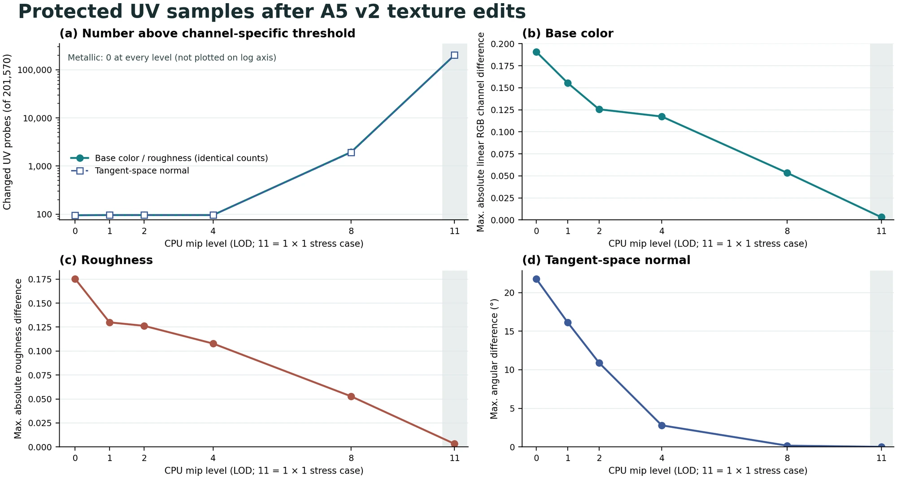
§ 09Discussion
9.1 Representing Art Direction as Reconstructible Conditions
Separating the components of an edit has practical implications for asset production. If only the final stone color and the original UV mask are retained, a mesh change makes it difficult to verify which portion of the wooden post was intended to change. Retaining part identity, spatial boundaries, and rules for protected parts makes it possible to state which surfaces should be edited and why neighboring surfaces should remain untouched, even if the regeneration process changes. The within-face clipping experiment shows that regular topology is not required to represent the region on the source asset. Retopology, local edge restructuring, and physical displacement remain viable production approaches. When included in a comparison, they should be recorded separately from approaches that preserve the original mesh so that the benefits of preprocessing are not conflated with what can be achieved on the original model.
9.2 Edit Coverage, Boundaries, and Material Appearance Require Distinct Evaluation
Choosing a single favorable metric would give different impressions of the same experiment. Within-face geometric clipping yields near-zero spill outside the specified domain. One-texel erosion yields no nonzero readings at the fixed LOD 0 probes. Yet CPU sampling of actual material channels reveals mixing over different extents at different mip levels. Each result must therefore retain its measurement target, threshold, units, and denominator. A composite average would obscure three separate judgments: whether the region is accurately specified, whether sampling reads unintended values, and whether the material looks consistent with the art direction under lighting. All three inform whether an asset is ready for another production iteration. None is sufficient by itself.
In future cross-model studies, an approved source edit can define the task, while evaluators who have not seen the prediction should assess the target independently. The evaluation can report correctly edited area, unintended edits in protected areas, and boundary error, with separate reporting for incomplete or semantically ambiguous targets. If actual PBR channels are read back, the definitions and test conditions for Base Color, Roughness, and Normal should remain explicit. This separation helps identify whether changes arise from the input data, the correspondence method, or material rendering as geometric scale and UV layout diverge. A successful export is not equivalent to a successful transfer of art direction.
Area Metrics for Cross-Model Validation
The follow-up evaluation protocol in E1-E distinguishes the proposed region from the region affected by the committed writeback. Let T be the target region independently annotated for editing, S the target region to protect, and P the effective footprint of the committed edit as confirmed by readback. The protocol can report A(P ∩ T), A(T \ P), and A(P ∩ S) separately. Dividing the first two quantities by the full area designated for editing measures coverage and omission, respectively. The protected-area error rate is normalized by A(S). When a region genuinely cannot be identified on the target, it should be marked ambiguous or missing before scoring rather than assigned a semantic label simply to enlarge the scorable domain. A zero denominator is reported as not applicable, and the absence of execution evidence is not recorded as a numerical zero. This distinction separates a potentially correct but unexecuted proposal from a committed edit that demonstrably changed the intended surface. It also permits abstention when the transfer is uncertain. These definitions describe a follow-up protocol, not cross-model scores obtained in this study.
9.3 Reproducibility and Scope
The frozen geometric protocol, analytical references, JSON outputs, four-sided diagnostic renders, and source-file hashes have been archived. The filtering phase preserves its fixed probes, thresholds, candidate parameters, resolution, and sampling settings. The material and geometry working copies preserve the shading assets, readback evidence, and preview configurations. This draft draws on existing research data; no new experiments were initiated and no historical results were changed. Formal comparisons should organize samples by asset, part, and task rather than by probe count. The more than 200,000 probes belong to a single asset case and do not constitute more than 200,000 independent observations. Synthetic cases verify aspects of the numerical methods, but measurements on one fixed Lantern asset do not establish statistical significance across assets.
§ 10Conclusion
The four-sided petrification edit on Lantern provides a concrete example of expressing an artistic requirement through within-face spatial regions, texture sampling tests, and a same-source visual comparison. The continuous region crosses the original triangle boundaries and can be verified in three dimensions. After rasterization in UV space, edit coverage, seam differences, and sampling in protected regions exhibit distinct behavior. Adding local geometry while retaining the same PBR resources produces observable changes in form, but normals, tangents, and wireframes must be examined to understand those changes. The next stage for MATE is to preserve these verifiable task conditions and investigate how they can be maintained across regenerated assets. This research is ongoing.
§Data and Figure Sources
- Lantern source asset: Microsoft / sbtron, Khronos glTF Sample Assets, CC0 1.0. Original asset documentation.
- MATE E1-F Phase 1 Technical Admission Audit; Phase 2A Art Direction Specification; Phase 2C-1 Spatial Region and Area Report; Phase 2C-2 UV Mask Audit; Phase 2C-3 Texture Filtering Report; Phase 2C-5 Material and Geometry Report; and the associated original evidence packages. Figure captions identify the corresponding phases.
§References
[R1] Maks Ovsjanikov, Mirela Ben-Chen, Justin Solomon, Adrian Butscher, and Leonidas Guibas. 2012. Functional Maps: A Flexible Representation of Maps between Shapes. ACM Transactions on Graphics, 31(4), Article 30. https://doi.org/10.1145/2185520.2185526
[R2] Lukas Uzolas, Elmar Eisemann, and Petr Kellnhofer. 2025. Surface-Aware Distilled 3D Semantic Features. Proceedings of the SIGGRAPH Asia 2025 Conference Papers, Article 3. https://doi.org/10.1145/3757377.3763974
[R3] Zhiqin Chen, Kangxue Yin, and Sanja Fidler. 2022. AUV-Net: Learning Aligned UV Maps for Texture Transfer and Synthesis. Proceedings of the IEEE/CVF Conference on Computer Vision and Pattern Recognition, 1465–1474. https://openaccess.thecvf.com/content/CVPR2022/html/Chen_AUV-Net_Learning_Aligned_UV_Maps_for_Texture_Transfer_and_Synthesis_CVPR_2022_paper.html
[R4] Rongzhen Lin, Zichong Chen, Xiaoyong Hao, Yang Zhou, and Hui Huang. 2025. High-Fidelity Texture Transfer Using Multi-Scale Depth-Aware Diffusion. Computer Graphics Forum, 44(4), e70172 (Eurographics Symposium on Rendering). https://doi.org/10.1111/cgf.70172
[R5] Dale Decatur, Itai Lang, Kfir Aberman, and Rana Hanocka. 2024. 3D Paintbrush: Local Stylization of 3D Shapes with Cascaded Score Distillation. Proceedings of the IEEE/CVF Conference on Computer Vision and Pattern Recognition, 4473–4483. https://openaccess.thecvf.com/content/CVPR2024/html/Decatur_3D_Paintbrush_Local_Stylization_of_3D_Shapes_with_Cascaded_Score_CVPR_2024_paper.html
[R6] Kim Youwang, Tae-Hyun Oh, and Gerard Pons-Moll. 2024. Paint-it: Text-to-Texture Synthesis via Deep Convolutional Texture Map Optimization and Physically-Based Rendering. Proceedings of the IEEE/CVF Conference on Computer Vision and Pattern Recognition, 4347–4356. https://doi.org/10.1109/CVPR52733.2024.00416
[R7] Lance Williams. 1983. Pyramidal Parametrics. ACM SIGGRAPH Computer Graphics, 17(3), 1–11. https://doi.org/10.1145/964967.801126
[R8] Khronos Group. glTF 2.0 Specification, §§3.8.4, 3.9. https://registry.khronos.org/glTF/specs/2.0/glTF-2.0.html